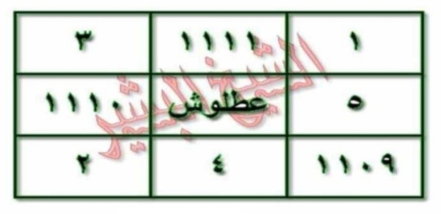

HALAMAN 16 — FAIDAH THARD 'ATHLUSH 2/2 — WAFAQ 3×3
arab
وَالْوَفْقُ هُوَ هَكَذَا — يُكْتَبُ بِصَمْغٍ فِي الْيَدِ الْيُمْنَى:
| ٣ | ١١١١ | ١ |
| ١١١٠ | عَطْلُوشٌ | ٥ |
| ٢ | ٤ | ١١٠٩ |
*تنبيه: الجدول يُقرأ يمينًا إلى يسارٍ كالعربية — الخلية اليُمنى هي (١) واليُسرى هي (٣) في السطر الأول، وهكذا.*
ثُمَّ بَعْدَ الدَّفْنِ تَقْرَأُ كَمَا تَقَدَّمَ آيَةَ الْكُرْسِيِّ إِلَى ﴿ خَالِدُونَ ﴾ وَسُورَةَ الْمُلْكِ، وَلَا تَلْتَفِتْ.
*الوَفْقُ يُكْتَبُ بِالْأَرْقَامِ الْعَرَبِيَّةِ وَاسْمِ [عَطْلُوشٌ] فِي الْوَسَطِ — لَا يُلَاتَنُ.*
latin
Wal-wafqu huwa hākadzā — yuktabu bishamghin fīl-yadil-yumnā:
| 3 | 1111 | 1 |
|---|---|---|
| 1110 | [‘Athlūsh] | 5 |
| 2 | 4 | 1109 |
*Tanbīh: al-jadwal yuqra’u yamīnan ilā yasārin kal-‘arabiyyah — al-khaliyyatul-yumnā hiya (1) wal-yusrā hiya (3) fis-sathril-awwal, wa hākadzā.*
Tsumma ba‘dad-dafni taqra’u kamā taqaddama āyatal-kursiyyi ilā ... khālidūna wa sūratal-Mulki, wa lā taltafit.
*Al-wafqu yuktabu bil-arqāmil-‘arabiyyati wasmi [‘Athlūshun] fīl-wasathi — lā yulātinu.*
**Cara baca angka (wasl latin):** Tiga — alfu mi’atin wa iḥdā ‘asyrata — wāḥidun / Khamsatun — ‘Athlūshun — alfu mi’atin wa ‘asyratun / Alfu mi’atin wa tis‘un — arba‘un — itsnāni. Posisi tengah adalah nama rajah, bukan angka.
Terjemahan
Dan wafaqnya adalah seperti ini — ditulis dengan *shamgh* pada tangan kanan:
| 3 | 1111 | 1 |
|---|---|---|
| 1110 | عَطْلُوشٌ | 5 |
| 2 | 4 | 1109 |
*Catatan: tabel dibaca dari kanan ke kiri seperti Arab — sel kanan baris pertama adalah (1) dan sel kiri adalah (3), demikian seterusnya.*
Kemudian setelah penguburan, bacalah sebagaimana telah dijelaskan Ayat Kursi sampai *khālidūn* dan Surah al-Mulk, dan jangan menoleh.
*Wafaq ditulis dengan angka Arab dan nama [‘Athlūsh] di tengah — tidak dilatinkan (rajah).*
Perbandingan koreksi: draft sebelumnya menulis baris pertama `8 | 1110 | 1109` dan mengacak posisi — itu **terbalik**. Yang benar menurut scan `IMG_20261025_092532.jpg` (verifikasi 69K crop) adalah **1-1111-3 / 1110-‘Athlūsh-5 / 2-4-1109** bila dibaca kiri-ke-kanan visual, atau **3-1111-1 / 5-‘Athlūsh-1110 / 1109-4-2** dalam urutan penulisan Arab kanan-ke-kiri seperti di atas. Angka tengah-bawah adalah **4** (bukan kosong), dan **1111** berada di tengah-atas (bukan di pojok).
Syarah dan Penjelasan
Halaman ini adalah **bagian 2/2 faedah ‘Athlūsh — inti wafaq**. Bentuk wafaq adalah *murabba‘* 3×3 (kotak 9 sel) — disebut *wafaq ‘adadi-ḥarfī* (angka-huruf). Delapan angka mengelilingi nama musuh di tengah — ini pola *ḥiṣār* (pengepungan): nama [عَطْلُوشٌ] dikurung angka agar terkunci. Angka-angka bukan acak: 1-2-3-4-5-...-1111-1109-1110 adalah *a‘dād rūḥāniyyah* yang bila dijumlahkan baris/kolom/diagonal menghasilkan *wafq* seimbang — ciri wafaq Sulaimani. Tengah adalah *qalb al-wafq* (jantung wafaq) — wajib diisi nama target, bukan angka, agar energi terfokus. Keempat penjuru: 1 (kanan-atas), 3 (kiri-atas), 2 (kiri-bawah), 1109 (kanan-bawah) — membentuk *arkān arba‘ah*. Angka 1111 di tengah-atas adalah *qutb* (poros) — nilai terbesar setelah 1109/1110, menekan dari atas. 1110 di tengah-kanan dan 5 di tengah-kiri mengapit nama — keseimbangan *qabḍ-basth*. 4 di tengah-bawah adalah penutup. Penulisan dengan *shamgh* (jelaga bulu domba) bukan tinta biasa — *shamgh* bersifat *muḥriq* (membakar) bagi jin ‘Athlūsh, berbeda dengan za‘farān yang bersifat menarik. Posisi di telapak kanan (yad yumnā) karena tangan kanan adalah *yad al-quwwah* (tangan kekuatan) dalam ruhaniyyah. Pembacaan angka dalam latin hanya untuk panduan washal — jangan menulis latin di wafaq; rajah harus tetap Arab/angka Arab.
Khususiyah dan Tatacara Praktik
Khasiat: mengunci ‘Athlūsh agar tidak merusak amal apapun — setelah 7 hari + penguburan, amal ruhaniyyah lain (hizib, wifq, shalawat) menjadi *mustajāb* tanpa inqilāb. Tata cara penulisan wafaq: (1) Berwudhu, menghadap kiblat, setelah *ishrāf al-‘ummār*, (2) Tulis 3×3 di telapak kanan dengan *shamgh* memakai *qalam* bambu/pena bulu — jangan pakai pena kimia, (3) Urutan tulis: mulai dari tengah (عَطْلُوشٌ), lalu 1 kanan-atas, 1111 tengah-atas, 3 kiri-atas, 5 kiri-tengah, 1110 kanan-tengah, 2 kiri-bawah, 4 tengah-bawah, 1109 kanan-bawah — urutan ini mengikuti *sair al-falak* (peredaran bintang), (4) Setelah wafaq selesai, langsung *tabkhīr* quzburah dan ‘azīmah 21× (lihat Hal15), (5) Jangan menambah/mengurangi angka — 8 angka + 1 nama = 9 sel penuh, (6) Jangan melatinkan nama tengah — tulis عَطْلُوشٌ persis dengan harakat atau tanpa harakat sesuai kemampuan, tetapi ejaan Arab wajib utuh, (7) Jika tangan berkeringat dan tulisan pudar sebelum 21×, ulangi tulisan — keutuhan wafaq saat ‘azīmah adalah syarat, (8) Air hapusan wafaq yang dimasukkan botol adalah *mā’ mu‘azzam* — jangan dibuang ke selokan/toilet; wajib dikubur di tanah sepi jauh dari najis, (9) Pantangan selama 7 hari: hindari maksiat lisan (ghibah, dusta), jaga wudhu, dan jangan mengerjakan amal ruhaniyyah lain yang berat (khawatir tumpang tindih), (10) Tanda berhasil: mimpi melihat ‘Athlūsh pergi atau bau quzburah hilang, dan amal selanjutnya terasa ringan.

[Gambar: Halaman 16 — Wafaq ‘Athlūsh — 3×3 — 8 angka + عَطْلُوشٌ di tengah — RTL]

[Gambar: HALAMAN 16 — FAIDAH THARD 'ATHLUSH 2/2 — WAFAQ 3×3 — Scan 300 DPI]